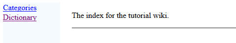
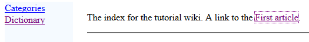
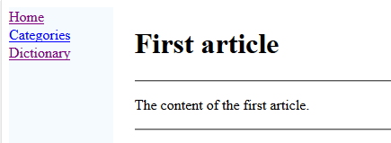
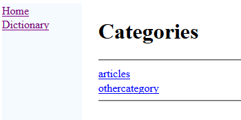
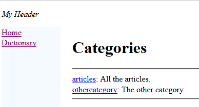
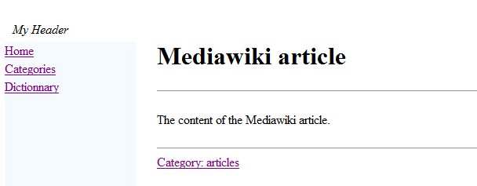
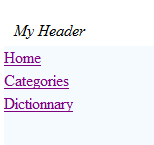
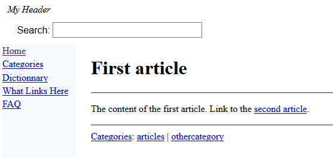
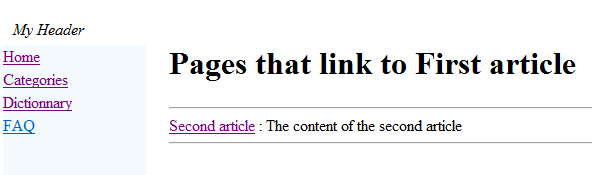

Tutorial
This article is a tutorial to create your first wiki. You will:
- Create an index file
- Create our first article
- Create a second article
- Create a header and footer
- Create a categories list
- Add an article with a Mediawiki markup
- Customize the left menu
Create an index file
Choose an empty directory to put your articles. Remind that the structure of this directory (it's sub−directories) is meaningless for the generator (but of course it can be useful for you to find your articles).
Now you will create only an
index article. Remind that you can have only one index in your directory. Lets create an XML file named
index.xml. The name of the file itself has no importance, but it will be easier to name it like that to find it easily. Let's write our first article:
<index>
The index for the tutorial wiki.
</index>
The fact that the top element is an
index is enough to specify that this article is our index. In all articles, the "Home" link will get us back to this article.
Let's generate our wiki. Double−click on the jar file of the application and:
- Set your directory (with only the index.xml file for the moment)
- Set another empty directory for the HTML wiki result
- Click on "Apply"
If you open the
index.html file in the result directory, you should see something like that in your navigator:

Of course the categories and dictionnary are empty because no category is defined and no articles besides the index have been created.
Create our first article
Now we will create a first article. Let's do it (the name of the XML file has no importance):
<article desc="first article">
The content of the first article.
</article>
We will also add an
internal wikilink to this article in our index file:
<index>
The index for the tutorial wiki. A link to the <ref id="first article" />.
</index>
Let's regenerate the wiki. Now the index looks like that:

And if we click on the link, we go to the article:

The articles dictionnary has also be generated, if we click on the Dictionnary link, we have a link for our first article.
Create a second article
Let's create a second article. This time we will define a category for this article.
<article desc="second article">
The content of the second article.
<cat id="articles"/>
</article>
Let's also set the categories for the second article, for example:
<article desc="first article">
The content of the first article.
<cat id="articles"/>
<cat id="othercategory"/>
</article>
Now two categories appear on the Categories link, each contain Category its articles:

We will create a header and footer files for all our HTML pages. For the header:
<header desc="My Header"/>
For the footer:
<footer desc="docJGenerator Tutorial"/>
Each of them must be on a different XML file.
Create a categories list
The categories names do not contain any meaningless description. Creating a categories list is just a way to add these descriptions. Let's create a new file for our categories descriptions:
<categories>
<category id="articles" desc="All the articles" />
<category id="othercategory" desc="The other category" />
</categories>
Now our categories have a description:

Add an article with a Mediawiki markup
We will add an article with a Mediawiki Markup. Create a new file with the extension "md":
{{name:Mediawiki article}}
The content of the Mediawiki article.
[[Category:articles]]
To allow Mediawiki Markup, you should now select the "Allow Mediawiki Markup" checkbox before the generation. The generation of this article will create the following html file:

By default the left menu only shows for each article:

We want to add to the left menu:
- A link to a What links here item which will give access for each article to a page showing all the articles which link to the current article
- A link to a FAQ article
To do that:
- We will create the FAQ article
- We will add the link to our "What links here"
We will also modify our first and second articles to add internal wiki links from one article to the other. This will allow to see more clearly how the
What links here item is working.
Create the FAQ article
The FAQ article will have the following content. As for all articles, the file can have any name you want.
<article desc="FAQ" >
<meta desc="Frequently Asked Questions" />
This is a FAQ for the tutorial, without any questions.
</article>
You can remark here that we added at the start of the FAQ a
meta element: it allows to show the text of this meta in the Dictionnary or the Categories along−side the name of the article itself. Here it is better for example to see the text
Frequently Asked Questions than
This is a FAQ for the tutorial, without any questions for the FAQ
[1]
.
Modify the first and second articles
We will also modify our first and second articles to add internal wiki links from one article to the other. We already saw how to add references, so there is nothing new here. We will have for the first article:
<article desc="first article">
The content of the first article. Link to the <ref id="second article" />.
<cat id="articles"/>
<cat id="othercategory"/>
</article>
And for the second article:
<article desc="second article">
The content of the second article. Link to the <ref id="first article" />.
<cat id="articles"/>
</article>
We will add an XML file with the
leftMenu root to customize what will appear in the left menu. In addition to the Categories and the Dictionnary, we want to have:
- A link to a The What links here item which will give access for each article to a page showing all the articles which link to the current article
- A link to our new FAQ article
The XML file for the left menu will be:
<leftMenu onIndex="true">
<menuItem desc="What Links Here" >
<linksFromRef />
</menuItem>
<menuItem desc="FAQ" >
<itemInternalRef id="FAQ" />
</menuItem>
</leftMenu>
Now the left menu has changed:

Let's go to our first article and click on the
What Links Here hyperlink: we see the list of articles which link to the first article (in our case, our list only contains the second article):

Notes
- ^ If an article don't have
meta element, the text will be the first sentence the tool detects for this article
Categories:
tutorials